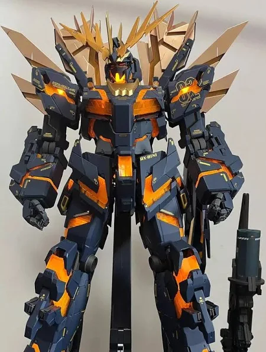

Perfect Grade (PG)
Perfect Grade is quite the show and it can become the centerpiece of a display. It is the grade to explore when you want a large project and have the time, budget, and space to enjoy it.
What is Perfect Grade?
Perfect Grade Gundam kits generally use 1/60 scale. For the same mobile suit, they are larger than 1/100-scale and 1/144-scale models. They emphasize detailed construction, large numbers of parts, and elaborate frame assemblies. The exact features depend on the kit.
The unique part of the KOSMOS PG 1/60 Banshee Norn is its display presence and the amount of detail to explore. However, do not think an expensive kit is necessary to enjoy Gundam. I would only choose one if I really liked the design and wanted the building experience.
Where to buy? -> The Gundam Place Store.

How to approach the build
Your focus with a PG kit should be planning and patience. Treat it as a project you can enjoy over multiple sessions rather than something you must finish quickly. You do not have to build every other grade first.
- Check the finished model’s size and prepare a suitable workspace.
- Organize the parts and follow the instructions one section at a time.
- Set a budget that includes shipping and any tools or optional accessories.
These are personal suggestions rather than official requirements for this grade.
Back to the grade comparison · Share your building interests